Graduate Fellowships: Graduate Assistance in Areas of National Need
(GAANN) (funded by the
Department of Education
Investigators: Ishfaq Ahmad (PI), Co-PIs: Dr. Gautam Das, Dr. Leo Fegaras, Dr Ramez Elmasri, Dr. Carter Tiernan, Dr. Bahram Khalili, Dr. Hao Che
The Department of Computer Science and Engineering (CSE) at UT Arlington is
pleased to announce a number of Graduate Assistance in Areas of National
Need (GAANN) fellowships. Theses prestigious GAANN Fellowships are supported
by a grant by the US Department of Education. US. citizens and residents are
eligible to apply.
The fellowships are awarded on a competitive basis
to outstanding applicants. Women and minorities are particularly encouraged
to apply. In selecting our GAANN fellows we will not discriminate based on
gender, race, national origin, color, disability, or age. The applicants
must hold either a B.S. or a M.S. degree in CS or related field.
You may contact Prof. Ishfaq Ahmad (iahmad@cse.uta.edu) for further
information about our GAANN Fellowships.
Meet our GAAN Fellows
Mark Havens
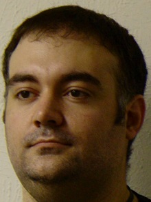
My research involves processing of standard video in order to isolate micro-expressions in the face. Micro-expressions are very brief facial expressions, lasting for only a fraction of a second, which occur involuntarily whenever a person attempts to conceal their true feelings. The crime drama, Lie to Me, is widely regarded as inspiring new research in this field, and is loosely based on the life work of the psychologist who pioneered it. My hope is to develop a method that can automatically data mine hidden and masked emotions involuntarily projected by the human face. With a lot of luck, we might someday be able to computationally extract the secret ill intentions of duplicitous people. I also believe similar methods can be used to diagnose mental illnesses cheaply, quickly, and reliability, with the hope of exceeding what is possible using traditional observational methods.
PhD. Supervising Advisor: Dr. Ishfaq Ahmad
GAANN Advisor: Dr. Ishfaq Ahmad
Brent Burns
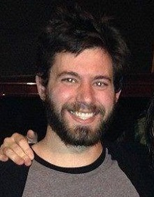
My research interests include pervasive computing, machine learning, embedded systems, in-home health care, and assistive technologies. Currently working on the SmartCare Project which aims to design and implement a state-of-the-art living environment for the elderly and disabled with technologies embedded into an apartment to give the resident(s) a "24-hour physical" that can assist their doctors and prolong independent living. Smaller aspects of the larger project include analyzing walking patterns, monitoring resident activity, detecting anomalies in blood pressure, gait, heart rate, and general health.
PhD. Supervising Advisor: Gergely Zaruba
GAANN Advisor: Dr. Ishfaq Ahmad
Ogenna Esimai
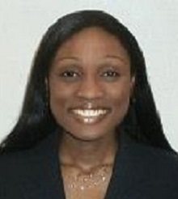
We are interested in developing computational tools for exploring long non-coding RNAs in cancer. Long non-coding RNAs (lncRNAs) have a length greater than 200 nucleotides and are not translated into protein. They are associated with several human diseases including cancer. Several lncRNAs have been studied extensively such as MALAT-1 also known as NEAT2 associated with metastasis in non-small cell lung cancer and involved in other cancers and HOTAIR which is associated with initiation and progression of a wide range of cancers. Tens of thousands of lncRNAs have been identified. Due to the sheer number of lncRNAs and the vastness of the diverse data available on the whole, it is impossible to characterize each individually in the wet lab and determine its function. This is where data mining and data analysis computational tools prove useful.
PhD. Supervising Advisor: Jean Gao
GAANN Advisor: Dr. Ishfaq Ahmad
Todd Rosenkrantz
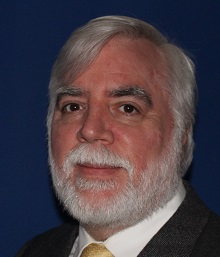
Studying embedded computing systems. Specifically interested in the development of embedded compute platforms to use distributed computing principles for processor intensive tasks thus allowing higher utilization of virtually unused processors and enabling small devices to complete complex work loads in a realistic time frame
Ph.D Supervising Advisor: Dr. Roger Walker
GAANN Advisor: Dr. Ishfaq Ahmad
Michael Ho
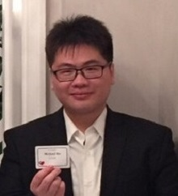
I am working in the area of Software security and Software testing and trying to implement the testing method to verify the vulnerability of software. I focus on the compiler and binary difference parts. We know that the compiler optimization option can make the binary code execute more efficiently. Different optimization command may have an influence on the variance of binary code.
However, the vulnerability may be exposure by compiler. Thus, the research should combine "Software security", "Software testing" even "Reverse engineering" to dig in this topic.
Ph.D Supervising Advisor: Dr. Lei, Yu (Jeff)
GAANN Advisor: Dr. Ishfaq Ahmad
John Podolanko
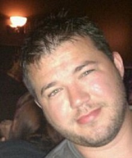
For the first two years of my graduate studies, my research focused on countering double-spend and block withholding attacks in Bitcoin. My research has helped me become intimately familiar with how Bitcoin works and the bitcoind source code. I have also acquired a very in-depth understanding of the Shadow simulation framework. I also spent some time on a side project called LiLAC (https://www.thelilacproject.org) which is a lightweight, low-latency, anonymous chat system that provides security and anonymity through onion routing and resists traffic analysis by using dependent-link padding. My research has now taken a new turn into the arena of cryptographic ransomware defense which is what my dissertation will cover. My aim is to defend against cryptographic ransomware by using hardware performance counters to detect malicious behavior before any files are encrypted/lost.
Ph.D Supervising Advisor: Dr. Jiang Ming
GAANN Advisor: Dr. Ishfaq Ahmad
Li Sulimowicz
My research interests include computer vision, machine learning, and parallel processing. To be more specific, I have been worked on image segmentation (unsupervised segmentation) and the semantic segmentation (supervised segmentation), which involves techniques like probabilistic graphical models, classifiers, and deep neural network. My current research is on video surveillance with 360-degree video.
Ph.D Supervising Advisor: Dr. Ishfaq Ahmad
GAANN Advisor: Dr. Ishfaq Ahmad
Nhat Tran
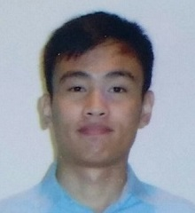
My current research aims at the development of machine learning methodology for multi-omics data integration to discover more reliable biomarkers for prognosis of cancer subtypes. Usually, a differential analysis is performed to select biomarkers with significant deviations between tumor and normal samples. However, as recent large-scale multi-omic analysis of lung cancer revealed multiple subtypes characterized by complex interactions between the genome, epigenome, transcriptome, and proteome, where biomarker utilizing a single-omic may easily misclassify tumor types. Therefore, for a more robust biomarker, it is important to consider the specific interactions between the multi-omics.
Ph.D. Supervising Advisor: Dr. Jean Gao.
GAANN Advisor: Dr. Ishfaq Ahmad
Mary Koone
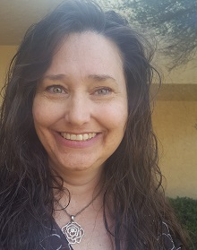
Use machine learning techniques and MD-provided polysomnography data to reduce the number of channels to provide accurate sleep apnea diagnosis; also to better determine which patients are likely to respond to surgical remedies. A poster has been shared in IPerform and two papers are in progress. Many opportunities for further investigation are indicated. In addition, I study the methods and algorithms that would be required for crowd-sourcing material for review forms. Crowdsourced feature extraction; review form project for potential proof of concept.
PhD Supervising Advisor: Dr. Gautam Das
GAANN Advisor: Dr. Ishfaq Ahmad
Alex Dillhoff
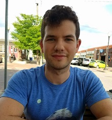
Hand pose estimation involved detecting a hand and predicting the shape. It is a difficult problem that has seen considerable attention throughout the years. Accurate hand pose is important in gesture recognition applications. Occlusion and noisy backgrounds are challenges that have yet to be overcome. My work focuses on exploring how these limitations cause computer vision models to fail and how they can be overcome.
Ph.D. Supervising Advisor: Dr. Vassilis Athitsos
GAANN Advisor: Dr. Ishfaq Ahmad
Jason Jennings
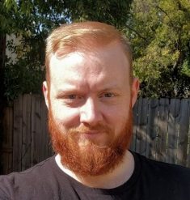
My research involves unsupervised deep learning to gain 3D understanding of objects in natural images. I focus on models that infer a description of both an object and its environment from a single 2D image, specifically focusing on representations commonly used in computer graphics. Because computer graphics is increasingly successful at generating photorealistic images, I believe that the future of generative models of images will utilize state-of-the-art computer graphics techniques, and my goal is to advance the field in this direction.
Ph.D. Supervising Advisor: Dr. Farhad Kamangar
GAANN Advisor: Dr. Ishfaq Ahmad
Damian Jimenez
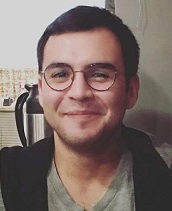
My main interests are deep learning and fact-checking. I am currently doing research that investigates several aspects of fact-checking and how to automate this process, which is currently done almost entirely by hand. I've worked on refining a model that identifies factual claims by making use of deep learning techniques, and I have published this research at IJCNN 2018. I've now also begun looking at more novel deep learning architectures, as well as beginning to work on the problem of translating a natural language statement into a structured query.
Ph.D. Supervising Advisor: Dr. Chengkai Li
GAANN Advisor: Dr. Ishfaq Ahmad